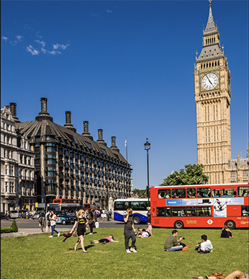

Blog
Traveling has always been a big hobby of mine ever since I was little. There is such an excitment about packing your bag and leaving all your troubles at home and being able to expirence new things. I have traveled to numerous place. My top 5 favorite places I have traveled:
1. London
2. Dominican Republic
3. The Bahamas
4. CanCun
5. Costa Rica
Where to next?
I am so excited to see what the future holds. My next big trip is to Dubai. Dubai is located in eastern coast of the Arabian Peninsula in the Southwest corner of the Arabian Golf.